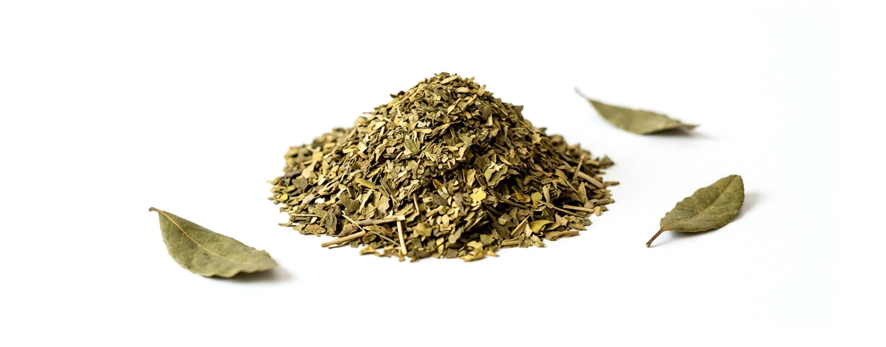

¿Por qué
tomar mate?

⚡︎ Energía y concentración sostenida
Gracias a su combinación natural de cafeína y otros compuestos presentes en la yerba mate, muchas
personas describen una sensación de energía más gradual que la que experimentan con el café.
✚ Favorece la concentración
Su contenido de cafeína puede ayudar a mejorar el estado de alerta y mantener el enfoque durante el
trabajo, el estudio o las actividades diarias.
✿ Rico en antioxidantes
La yerba mate contiene polifenoles y otros antioxidantes que contribuyen a proteger las células
frente al estrés oxidativo.
✚ Vitaminas y minerales
Aporta vitaminas del complejo B y minerales como potasio y magnesio, presentes de forma natural en
la hoja de yerba mate.
✿ 100% natural
La yerba mate tradicional es un producto de origen vegetal, elaborado únicamente a partir de hojas y
tallos, sin colorantes ni conservantes.
☕︎ Una alternativa al café
Si quieres variar tu rutina sin renunciar a la cafeína, el mate ofrece una experiencia diferente,
con un sabor único y una forma de consumo que invita a disfrutar el momento.
❤ Ideal para compartir
El mate ha sido durante siglos una bebida social. Compartir una ronda es una tradición que reúne
conversaciones, trabajo y buenos momentos.
♻︎ Menos residuos
Utilizando el mismo mate y la misma bombilla durante años, se reduce el uso de vasos, cápsulas y
otros productos desechables.
❤ Una tradición sudamericana
Consumido desde hace generaciones en Argentina, Uruguay, Paraguay y el sur de Brasil, el mate es una
de las bebidas más representativas de la cultura de la región.